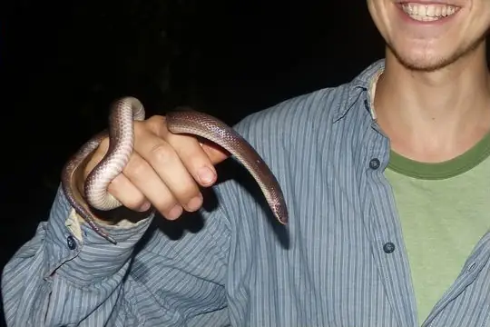
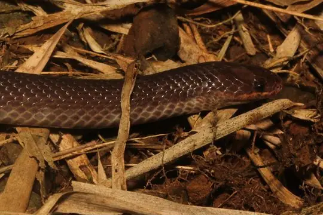
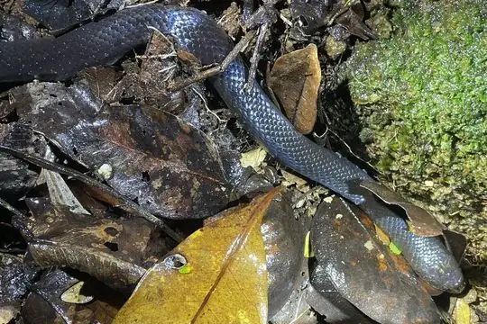
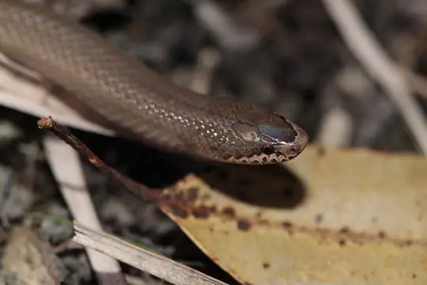
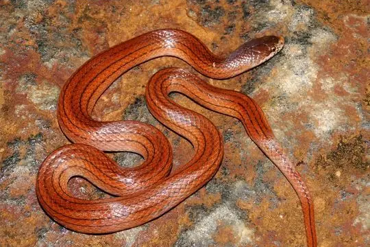
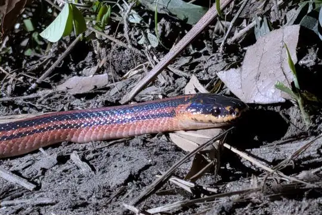

Pseudoxyrhopus
The genus Pseudoxyrhopus (family Pseudoxyrhophiidae) has 11 species in SnakeList (none venomous), recorded in 1 country.
- 11species
- 11non-venomous
- 1country
About the genus
A genus of the family Pseudoxyrhophiidae (Malagasy snakes and allies).
Species
Showing 11 species

Ambre Brook SnakePseudoxyrhopus ambreensis- No photo yetAnjanaharibe Ground SnakePseudoxyrhopus analabe
- No photo yetAnkafina Ground SnakePseudoxyrhopus ankafinaensis

Brown Brook SnakePseudoxyrhopus microps- No photo yetMandena Ground SnakePseudoxyrhopus kely

Night Brook SnakePseudoxyrhopus heterurus- No photo yetPlateau Brook SnakePseudoxyrhopus imerinae
- No photo yetRanomafana Ground SnakePseudoxyrhopus oblectator

Sokosoko Ground SnakePseudoxyrhopus sokosoko
Striped Brook SnakePseudoxyrhopus quinquelineatus
Three-striped Ground SnakePseudoxyrhopus tritaeniatus
No snakes in Pseudoxyrhopus match.
About the genus Pseudoxyrhopus
- Family: Pseudoxyrhophiidae.
- Recorded in: Madagascar.